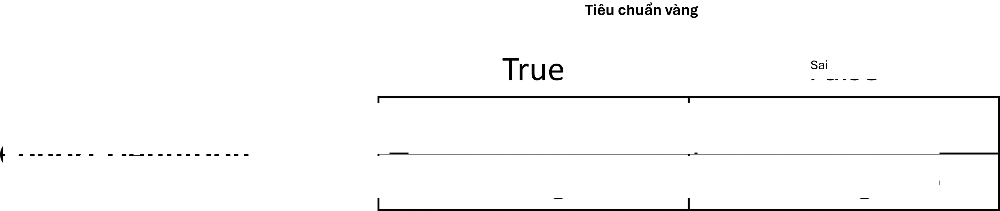
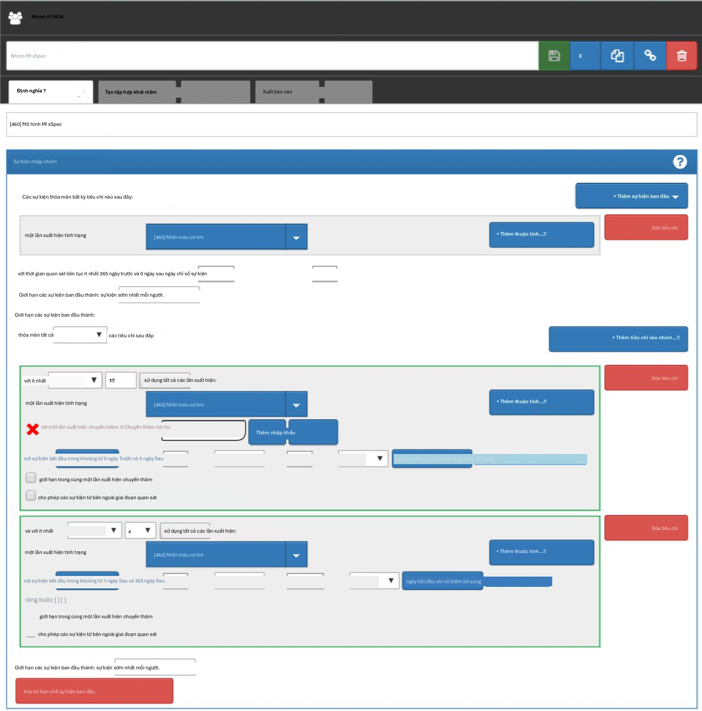
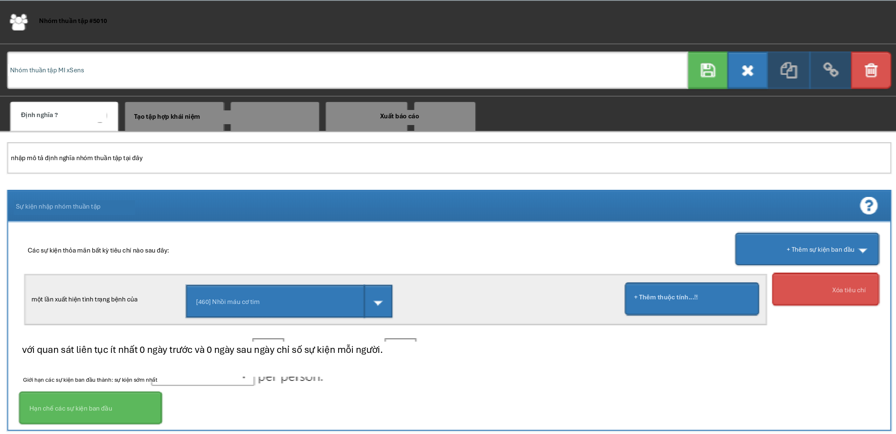
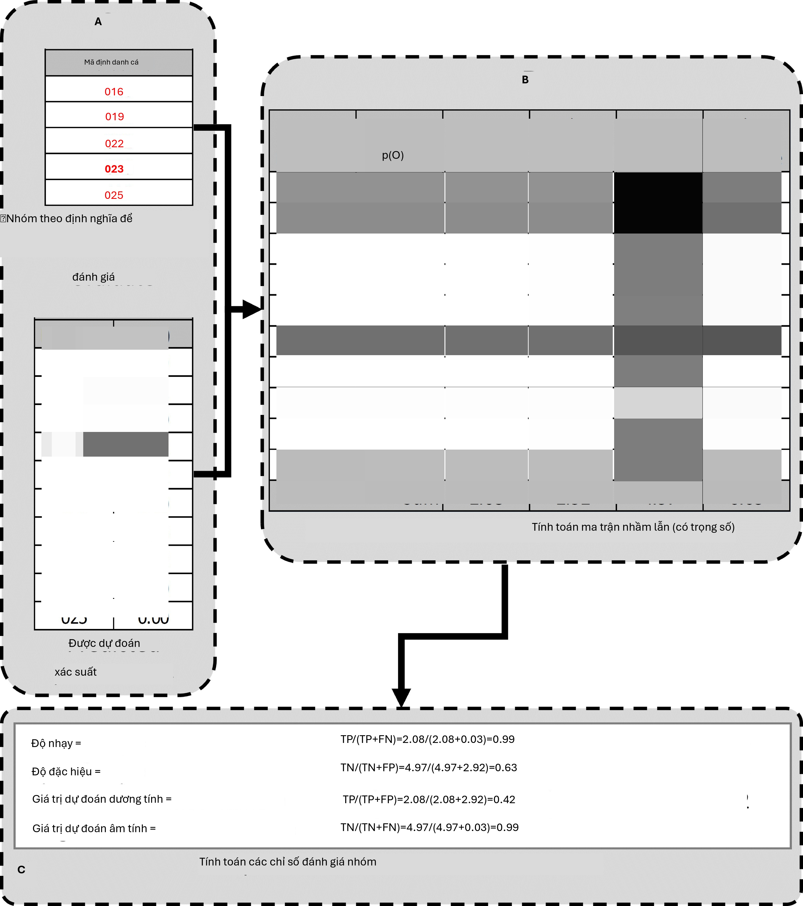

Chương 15: Tính hợp lệ lâm sàng
Tính hợp lệ lâm sàng
Chủ biên chương: Joel Swerdel, Seng Chan You, Ray Chen & Patrick Ryan
Khả năng biến vật chất thành năng lượng giống như việc bắn chim trong bóng tối ở một đất nước chỉ có vài con chim. Einstein, 1935
Tầm nhìn của OHDSI là “Một thế giới nơi nghiên cứu quan sát tạo ra sự hiểu biết toàn diện về sức khỏe và bệnh tật.” Các thiết kế hồi cứu cung cấp một phương tiện cho nghiên cứu sử dụng dữ liệu hiện có nhưng có thể chứa đầy các mối đe dọa đối với các khía cạnh khác nhau của tính hợp lệ như đã thảo luận trong Chương 14. Không dễ để tách biệt tính hợp lệ lâm sàng khỏi chất lượng dữ liệu và phương pháp thống kê, nhưng tại đây chúng tôi sẽ tập trung vào ba khía cạnh về tính hợp lệ lâm sàng: Đặc điểm của các cơ sở dữ liệu chăm sóc sức khỏe, Xác nhận nhóm thuần tập và Tính khái quát của bằng chứng. Hãy quay lại ví dụ về ước tính cấp độ quần thể (Chương 12). Chúng tôi đã cố gắng trả lời câu hỏi “Liệu thuốc ức chế ACE có gây phù mạch so với thuốc lợi tiểu thiazide hoặc thuốc giống thiazide không?” Trong ví dụ đó, chúng tôi đã chứng minh rằng thuốc ức chế ACE gây phù mạch nhiều hơn so với thuốc lợi tiểu thiazide hoặc thuốc giống thiazide. Chương này dành riêng để trả lời câu hỏi: “Phân tích được thực hiện khớp với ý định lâm sàng ở mức độ nào?”
Đặc điểm của các cơ sở dữ liệu chăm sóc sức khỏe
Có khả năng những gì chúng tôi tìm thấy là mối quan hệ giữa việc kê đơn thuốc ức chế ACE và phù mạch thay vì mối quan hệ giữa việc sử dụng thuốc ức chế ACE và phù mạch. Chúng tôi đã thảo luận về chất lượng dữ liệu trong chương trước (15). Chất lượng của cơ sở dữ liệu được chuyển đổi sang Mô hình dữ liệu chung (CDM) không thể vượt quá cơ sở dữ liệu gốc. Tại đây, chúng tôi đang giải quyết các đặc điểm của hầu hết các cơ sở dữ liệu sử dụng dịch vụ chăm sóc sức khỏe. Nhiều cơ sở dữ liệu được sử dụng trong OHDSI bắt nguồn từ dữ liệu yêu cầu thanh toán hành chính hoặc hồ sơ sức khỏe điện tử (EHR). Dữ liệu yêu cầu thanh toán và EHR có các quy trình thu thập dữ liệu khác nhau, không có quy trình nào lấy nghiên cứu làm mục đích chính. Các yếu tố dữ liệu từ hồ sơ yêu cầu thanh toán được thu thập cho mục đích hoàn trả, giao dịch tài chính giữa các bác sĩ lâm sàng
và người chi trả, theo đó các dịch vụ cung cấp cho bệnh nhân bởi các nhà cung cấp được biện minh đầy đủ để đạt được thỏa thuận về các khoản thanh toán bởi các bên chịu trách nhiệm. Các yếu tố dữ liệu trong hồ sơ EHR được thu thập để hỗ trợ chăm sóc lâm sàng và các hoạt động hành chính, và chúng thường chỉ phản ánh thông tin mà các nhà cung cấp trong một hệ thống y tế nhất định cảm thấy cần thiết để ghi lại dịch vụ hiện tại và cung cấp bối cảnh cần thiết cho việc chăm sóc theo dõi dự kiến trong hệ thống y tế của họ. Chúng có thể không đại diện cho toàn bộ lịch sử y tế của bệnh nhân và có thể không tích hợp dữ liệu từ khắp các hệ thống y tế.
Để tạo ra bằng chứng đáng tin cậy từ dữ liệu quan sát, nhà nghiên cứu cần hiểu hành trình mà dữ liệu trải qua từ thời điểm bệnh nhân tìm kiếm sự chăm sóc cho đến thời điểm dữ liệu phản ánh sự chăm sóc đó được sử dụng trong phân tích. Ví dụ, “phơi nhiễm thuốc” có thể được suy ra từ nhiều nguồn dữ liệu quan sát khác nhau, bao gồm đơn thuốc do bác sĩ lâm sàng viết, hồ sơ cấp phát thuốc tại nhà thuốc, các thủ thuật quản lý tại bệnh viện hoặc lịch sử dùng thuốc do bệnh nhân tự báo cáo. Nguồn dữ liệu có thể ảnh hưởng đến mức độ tin cậy của chúng ta vào suy luận về việc bệnh nhân nào đã hoặc không sử dụng thuốc, cũng như khi nào và trong bao lâu. Quy trình thu thập dữ liệu có thể dẫn đến đánh giá thấp mức độ phơi nhiễm, chẳng hạn như nếu các mẫu thuốc miễn phí hoặc thuốc không kê đơn không được ghi lại, hoặc đánh giá quá cao mức độ phơi nhiễm, chẳng hạn như nếu bệnh nhân không mua đơn thuốc đã viết hoặc không tuân thủ việc sử dụng thuốc được cấp phát. Hiểu được các sai lệch tiềm ẩn trong việc xác định phơi nhiễm và kết cục, và lý tưởng hơn là định lượng và điều chỉnh các sai số đo lường này, có thể cải thiện sự tin cậy của chúng ta vào tính hợp lệ của bằng chứng rút ra từ dữ liệu sẵn có.
Xác nhận nhóm thuần tập
Hripcsak và Albers (2017) mô tả rằng “kiểu hình là một đặc điểm kỹ thuật của một trạng thái có thể quan sát được và có khả năng thay đổi của một sinh vật, khác với kiểu gen, vốn bắt nguồn từ cấu trúc di truyền của sinh vật. Thuật ngữ kiểu hình có thể được áp dụng cho các đặc điểm của bệnh nhân được suy ra từ dữ liệu hồ sơ sức khỏe điện tử (EHR). Các nhà nghiên cứu đã thực hiện kiểu hình hóa EHR từ khi bắt đầu tin học y tế, từ cả dữ liệu có cấu trúc và dữ liệu tường thuật. Mục tiêu là rút ra kết luận về một khái niệm mục tiêu dựa trên dữ liệu EHR thô, dữ liệu yêu cầu thanh toán hoặc các dữ liệu liên quan lâm sàng khác. Các thuật toán kiểu hình – tức là các thuật toán xác định hoặc đặc trưng hóa kiểu hình – có thể được tạo ra bởi các chuyên gia lĩnh vực và kỹ sư tri thức, bao gồm nghiên cứu gần đây về kỹ thuật tri thức hoặc thông qua các hình thức học máy đa dạng… để tạo ra các biểu diễn mới về dữ liệu.”
Mô tả này làm nổi bật một số thuộc tính hữu ích cần củng cố khi xem xét tính hợp lệ lâm sàng: 1) nó làm rõ rằng chúng ta đang nói về một thứ gì đó có thể quan sát được (và do đó có thể được thu thập trong dữ liệu quan sát của chúng ta); 2) nó bao gồm khái niệm thời gian trong đặc điểm kỹ thuật kiểu hình (vì trạng thái của một người có thể thay đổi); 3) nó phân biệt giữa kiểu hình như ý định mong muốn và thuật toán kiểu hình, là việc triển khai ý định mong muốn đó.
OHDSI đã áp dụng thuật ngữ “nhóm thuần tập” (cohort) để xác định tập hợp những người đáp ứng một hoặc nhiều
- Xác nhận nhóm thuần tập 309
tiêu chí đưa vào trong một khoảng thời gian. Một “định nghĩa nhóm thuần tập” đại diện cho logic cần thiết để khởi tạo một nhóm thuần tập dựa trên một cơ sở dữ liệu quan sát. Theo nghĩa này, định nghĩa nhóm thuần tập (hoặc thuật toán kiểu hình) được sử dụng để tạo ra một nhóm thuần tập, nhằm đại diện cho kiểu hình, là những người thuộc trạng thái lâm sàng có thể quan sát được mà chúng ta quan tâm.
Hầu hết các loại phân tích quan sát, bao gồm đặc điểm lâm sàng, ước tính hiệu quả cấp độ quần thể và dự đoán cấp độ bệnh nhân, yêu cầu một hoặc nhiều nhóm thuần tập được thiết lập như một phần của quy trình nghiên cứu. Để đánh giá tính hợp lệ của bằng chứng do các phân tích này tạo ra, người ta phải xem xét câu hỏi này cho mỗi nhóm thuần tập: những người được xác định trong nhóm thuần tập dựa trên định nghĩa nhóm thuần tập và dữ liệu quan sát sẵn có phản ánh chính xác đến mức nào những người thực sự thuộc về kiểu hình đó?
Để quay lại ví dụ về ước tính cấp độ quần thể (Chương 12) “Liệu thuốc ức chế ACE có gây phù mạch so với thuốc lợi tiểu thiazide hoặc thuốc giống thiazide không?”, chúng ta phải xác định ba nhóm thuần tập: nhóm thuần tập mục tiêu gồm những người mới sử dụng thuốc ức chế ACE, nhóm thuần tập so sánh gồm những người mới sử dụng thuốc lợi tiểu thiazide và nhóm thuần tập kết cục gồm những người phát triển bệnh phù mạch. Chúng ta tự tin đến mức nào rằng tất cả việc sử dụng thuốc ức chế ACE hoặc thuốc lợi tiểu thiazide được thu thập đầy đủ, để có thể xác định “người dùng mới” bằng lần phơi nhiễm được quan sát đầu tiên, mà không lo ngại về việc sử dụng trước đó (nhưng chưa được quan sát)? Chúng ta có thể thoải mái suy luận rằng những người có bản ghi phơi nhiễm thuốc đối với thuốc ức chế ACE thực sự đã tiếp xúc với thuốc, và những người không có bản ghi phơi nhiễm thuốc thực sự không tiếp xúc không? Có sự không chắc chắn nào trong việc xác định khoảng thời gian một người được phân loại vào trạng thái “sử dụng thuốc ức chế ACE” không, cho dù là khi suy luận việc tham gia nhóm thuần tập tại thời điểm bắt đầu dùng thuốc hay khi kết thúc nhóm thuần tập khi ngừng dùng thuốc? Những người có bản ghi về tình trạng “Phù mạch” có thực sự trải qua tình trạng sưng nhanh dưới da, khác biệt với các loại phản ứng dị ứng da liễu khác không? Tỷ lệ bệnh nhân phát triển phù mạch nhận được sự chăm sóc y tế dẫn đến dữ liệu quan sát được sử dụng để xác định các ca lâm sàng này dựa trên định nghĩa nhóm thuần tập là bao nhiêu? Các sự kiện phù mạch có khả năng do thuốc gây ra có thể được phân biệt tốt đến mức nào với các sự kiện được biết là do các tác nhân khác gây ra, chẳng hạn như dị ứng thực phẩm hoặc nhiễm virus? Liệu thời điểm khởi phát bệnh có được thu thập đủ tốt để chúng ta tự tin trong việc rút ra mối liên hệ tạm thời giữa tình trạng phơi nhiễm và tỷ lệ mắc kết cục không? Trả lời những loại câu hỏi này là cốt lõi của tính hợp lệ lâm sàng.
Trong chương này, chúng ta sẽ thảo luận về các phương pháp xác nhận các định nghĩa nhóm thuần tập. Trước hết, chúng ta mô tả các thước đo được sử dụng để đo lường tính hợp lệ của một định nghĩa nhóm thuần tập. Tiếp theo, chúng ta mô tả hai phương pháp để ước tính các thước đo này: 1) đánh giá lâm sàng thông qua xác minh hồ sơ nguồn và 2) PheValuator, một phương pháp bán tự động sử dụng mô hình dự đoán chẩn đoán.
Các thước đo đánh giá nhóm thuần tập
Sau khi định nghĩa nhóm thuần tập cho nghiên cứu đã được xác định, tính hợp lệ của định nghĩa có thể được đánh giá. Một cách tiếp cận phổ biến để đánh giá tính hợp lệ là so sánh một số hoặc tất cả những người trong một nhóm thuần tập được xác định với một ‘tiêu chuẩn vàng’ tham chiếu và thể hiện kết quả trong
một ma trận nhầm lẫn, một bảng dự phòng hai nhân hai phân tầng những người theo phân loại tiêu chuẩn vàng của họ và trình độ chuyên môn trong định nghĩa nhóm thuần tập. Hình
16.1 hiển thị các phần tử của ma trận nhầm lẫn.

Hình 16.1: Ma trận nhầm lẫn.
Các kết quả đúng và sai từ định nghĩa nhóm thuần tập được xác định bằng cách áp dụng định nghĩa cho một nhóm người. Những người được bao gồm trong định nghĩa được coi là dương tính với tình trạng sức khỏe và được gắn nhãn “Đúng” (True). Những người không được bao gồm trong định nghĩa nhóm thuần tập được coi là âm tính với tình trạng sức khỏe và được gắn nhãn “Sai” (False). Mặc dù sự thật tuyệt đối về trạng thái sức khỏe của một người được xem xét trong định nghĩa nhóm thuần tập rất khó xác định, nhưng có nhiều phương pháp để thiết lập một tiêu chuẩn vàng tham chiếu, hai trong số đó sẽ được mô tả sau trong chương này. Bất kể phương pháp nào được sử dụng, việc gắn nhãn những người này cũng giống như mô tả cho định nghĩa nhóm thuần tập.
Ngoài các lỗi trong chỉ báo nhị phân về phân định kiểu hình, thời điểm xảy ra tình trạng sức khỏe cũng có thể không chính xác. Ví dụ, trong khi định nghĩa nhóm thuần tập có thể gắn nhãn chính xác một người là thuộc về một kiểu hình, định nghĩa có thể xác định không chính xác ngày và giờ khi một người không mắc bệnh trở thành người mắc bệnh. Lỗi này sẽ làm tăng sai lệch cho các nghiên cứu sử dụng kết quả phân tích sống sót, ví dụ: tỷ lệ rủi ro (hazard ratios), như một thước đo hiệu quả.
Bước tiếp theo trong quy trình là đánh giá sự phù hợp của tiêu chuẩn vàng với định nghĩa nhóm thuần tập. Những người được cả phương pháp tiêu chuẩn vàng và định nghĩa nhóm thuần tập gắn nhãn là “Đúng” được gọi là “Dương tính thật” (True Positives). Những người được phương pháp tiêu chuẩn vàng gắn nhãn là “Sai” và bởi định nghĩa nhóm thuần tập là “Đúng” được gọi là “Dương tính giả” (False Positives), tức là định nghĩa nhóm thuần tập đã phân loại sai những người này là mắc bệnh khi họ không mắc. Những người được cả phương pháp tiêu chuẩn vàng và định nghĩa nhóm thuần tập gắn nhãn là “Sai” được gọi là “Âm tính thật” (True Negatives). Những người được phương pháp tiêu chuẩn vàng gắn nhãn là “Đúng” và bởi định nghĩa nhóm thuần tập là “Sai” được gọi là “Âm tính giả” (False Negatives), tức là định nghĩa nhóm thuần tập đã phân loại không chính xác những người này là không mắc bệnh, khi thực tế họ thuộc về kiểu hình đó. Sử dụng các số đếm từ bốn ô trong ma trận nhầm lẫn, chúng ta có thể định lượng độ chính xác của định nghĩa nhóm thuần tập trong việc phân loại trạng thái kiểu hình trong một nhóm người. Có các thước đo hiệu suất chuẩn để đo lường hiệu suất định nghĩa nhóm thuần tập:
- Độ nhạy của định nghĩa nhóm thuần tập – tỷ lệ những người thực sự thuộc về kiểu hình trong quần thể được xác định chính xác là có kết cục sức khỏe dựa trên định nghĩa nhóm thuần tập là bao nhiêu? Điều này được xác định bằng công thức sau:
Độ nhạy = Dương tính thật / (Dương tính thật + Âm tính giả)
- Độ đặc hiệu của định nghĩa nhóm thuần tập – tỷ lệ những người không thuộc về kiểu hình trong quần thể được xác định chính xác là không có kết cục sức khỏe dựa trên định nghĩa nhóm thuần tập là bao nhiêu? Điều này được xác định bằng công thức sau:
Độ đặc hiệu = Âm tính thật / (Âm tính thật + Dương tính giả)
- Giá trị dự đoán dương tính (PPV) của định nghĩa nhóm thuần tập – tỷ lệ những người được định nghĩa nhóm thuần tập xác định là có tình trạng sức khỏe thực sự thuộc về kiểu hình là bao nhiêu? Điều này được xác định bằng công thức sau:
PPV = Dương tính thật / (Dương tính thật + Dương tính giả)
- Giá trị dự đoán âm tính (NPV) của định nghĩa nhóm thuần tập – tỷ lệ những người được định nghĩa nhóm thuần tập xác định là không có tình trạng sức khỏe thực sự không thuộc về kiểu hình là bao nhiêu? Điều này được xác định bằng công thức sau:
NPV = Âm tính thật / (Âm tính thật + Âm tính giả)
Điểm hoàn hảo cho các thước đo này là 100%. Do bản chất của dữ liệu quan sát, điểm hoàn hảo thường còn lâu mới là tiêu chuẩn. Rubbo và cộng sự (2015) đã xem xét các nghiên cứu xác nhận các định nghĩa nhóm thuần tập cho nhồi máu cơ tim. Trong số 33 nghiên cứu họ kiểm tra, chỉ có một định nghĩa nhóm thuần tập trong một tập dữ liệu đạt được điểm hoàn hảo về PPV. Nhìn chung, 31 trong số 33 nghiên cứu báo cáo PPV ≥ 70%. Tuy nhiên, họ cũng nhận thấy rằng trong số 33 nghiên cứu, chỉ có 11 nghiên cứu báo cáo độ nhạy và 5 nghiên cứu báo cáo độ đặc hiệu. PPV là một hàm của độ nhạy, độ đặc hiệu và tỷ lệ phổ biến. Các tập dữ liệu với các giá trị khác nhau về tỷ lệ phổ biến sẽ tạo ra các giá trị khác nhau cho PPV khi độ nhạy và độ đặc hiệu được giữ không đổi. Nếu không có độ nhạy và độ đặc hiệu, việc điều chỉnh sai lệch do các định nghĩa nhóm thuần tập không hoàn hảo là không thể. Ngoài ra, việc phân loại sai tình trạng sức khỏe có thể mang tính khác biệt, nghĩa là định nghĩa nhóm thuần tập hoạt động khác nhau trên một nhóm người so với nhóm so sánh, hoặc không khác biệt, khi định nghĩa nhóm thuần tập hoạt động tương tự trên cả hai nhóm so sánh. Các nghiên cứu xác nhận định nghĩa nhóm thuần tập trước đây chưa kiểm tra khả năng phân loại sai khác biệt, mặc dù nó có thể dẫn đến sai lệch mạnh trong các ước tính hiệu quả.
Khi các thước đo hiệu suất đã được thiết lập cho định nghĩa nhóm thuần tập, chúng có thể được sử dụng để điều chỉnh kết quả cho các nghiên cứu sử dụng các định nghĩa này. Về lý thuyết, việc điều chỉnh kết quả nghiên cứu cho các ước tính sai số đo lường này đã được thiết lập tốt. Tuy nhiên, trong thực tế, vì khó khăn trong việc thu thập các đặc điểm hiệu suất, những điều chỉnh này hiếm khi được xem xét. Các phương pháp được sử dụng để xác định tiêu chuẩn vàng được mô tả trong phần còn lại của mục này.
Xác minh hồ sơ nguồn
Một phương pháp phổ biến được sử dụng để xác nhận các định nghĩa nhóm thuần tập là đánh giá lâm sàng thông qua xác minh hồ sơ nguồn: một cuộc kiểm tra kỹ lưỡng hồ sơ của một người bởi một
hoặc nhiều chuyên gia lĩnh vực có đủ kiến thức để phân loại chính xác tình trạng hoặc đặc điểm lâm sàng quan tâm. Xem xét biểu đồ (chart review) thường tuân theo các bước sau:
Xin phép hội đồng đánh giá thể chế (IRB) địa phương và/hoặc cá nhân nếu cần để tiến hành nghiên cứu bao gồm xem xét biểu đồ.
Tạo nhóm thuần tập bằng cách sử dụng định nghĩa nhóm thuần tập cần đánh giá. Lấy mẫu một tập hợp con những người để xem xét thủ công nếu không đủ nguồn lực để đánh giá toàn bộ nhóm thuần tập.
Xác định một hoặc nhiều người có đủ chuyên môn lâm sàng để xem xét hồ sơ người bệnh.
Xác định các hướng dẫn để đánh giá xem một người là dương tính hay âm tính đối với tình trạng hoặc đặc điểm lâm sàng mong muốn.
Các chuyên gia lâm sàng xem xét và đánh giá tất cả dữ liệu sẵn có cho những người trong mẫu để phân loại từng người xem họ có thuộc về kiểu hình hay không.
Lập bảng những người theo phân loại định nghĩa nhóm thuần tập và phân loại đánh giá lâm sàng thành một ma trận nhầm lẫn, và tính toán các đặc điểm hiệu suất có thể có từ dữ liệu đã thu thập.
Kết quả từ việc xem xét biểu đồ thường bị giới hạn trong việc đánh giá một đặc điểm hiệu suất, giá trị dự đoán dương tính (PPV). Điều này là do định nghĩa nhóm thuần tập đang được đánh giá chỉ tạo ra những người được cho là có tình trạng hoặc đặc điểm mong muốn. Do đó, mỗi người trong mẫu của nhóm thuần tập được phân loại là dương tính thật hoặc dương tính giả dựa trên đánh giá lâm sàng. Nếu không biết tất cả những người thuộc kiểu hình trong toàn bộ quần thể (bao gồm cả những người không được định nghĩa nhóm thuần tập xác định), thì không thể xác định các âm tính giả, và do đó không thể điền vào phần còn lại của ma trận nhầm lẫn để tạo ra các đặc điểm hiệu suất còn lại. Các phương pháp tiềm năng để xác định tất cả những người thuộc kiểu hình trên toàn bộ quần thể bao gồm xem xét biểu đồ của toàn bộ cơ sở dữ liệu, điều này thường không khả thi trừ khi quần thể tổng thể nhỏ, hoặc sử dụng các sổ đăng ký lâm sàng toàn diện trong đó tất cả các ca thực sự đã được gắn cờ và đánh giá, chẳng hạn như sổ đăng ký khối u (xem ví dụ bên dưới). Ngoài ra, người ta có thể lấy mẫu những người không đủ điều kiện cho định nghĩa nhóm thuần tập để tạo ra một tập hợp con các âm tính được dự đoán, và sau đó lặp lại các bước 3-6 của quá trình xem xét biểu đồ ở trên để kiểm tra xem những bệnh nhân này có thực sự thiếu tình trạng hoặc đặc điểm lâm sàng quan tâm hay không, từ đó có thể xác định âm tính thật hoặc âm tính giả. Điều này sẽ cho phép ước tính giá trị dự đoán âm tính (NPV), và nếu có ước tính phù hợp về tỷ lệ phổ biến kiểu hình, thì độ nhạy và độ đặc hiệu có thể được ước tính.
Có một số hạn chế đối với việc đánh giá lâm sàng thông qua xác minh hồ sơ nguồn. Như đã đề cập trước đó, xem xét biểu đồ có thể là một quy trình rất tốn thời gian và tốn kém tài nguyên, ngay cả khi chỉ để đánh giá một thước đo duy nhất như PPV. Hạn chế này cản trở đáng kể tính thực tiễn của việc đánh giá toàn bộ quần thể để điền vào một ma trận nhầm lẫn hoàn chỉnh. Ngoài ra, nhiều bước trong quy trình trên có khả năng làm sai lệch kết quả nghiên cứu. Ví dụ, nếu hồ sơ không thể truy cập bình đẳng trong EHR, nếu không có EHR, hoặc nếu cần sự đồng ý của từng bệnh nhân, thì tập hợp con đang được đánh giá có thể không thực sự ngẫu nhiên và có thể gây ra sai lệch lấy mẫu hoặc sai lệch lựa chọn. Ngoài ra, đánh giá thủ công dễ bị lỗi do con người hoặc phân loại sai và
do đó có thể không đại diện cho một thước đo chính xác hoàn hảo. Thường có sự bất đồng giữa các người đánh giá lâm sàng do dữ liệu trong hồ sơ của người bệnh mơ hồ, chủ quan hoặc chất lượng thấp. Trong nhiều nghiên cứu, quy trình này liên quan đến quyết định đa số để đạt được sự đồng thuận, tạo ra một phân loại nhị phân cho những người không phản ánh sự bất đồng giữa các người đánh giá.
Ví dụ về xác minh hồ sơ nguồn
Một ví dụ về quy trình tiến hành xác nhận định nghĩa nhóm thuần tập bằng cách sử dụng xem xét biểu đồ được cung cấp từ một nghiên cứu của Trung tâm Y tế Irving thuộc Đại học Columbia (CUIMC), nơi đã xác nhận một định nghĩa nhóm thuần tập cho nhiều loại ung thư như một phần của nghiên cứu khả thi cho Viện Ung thư Quốc gia (NCI). Các bước được sử dụng để tiến hành xác nhận cho ví dụ về một trong những bệnh ung thư này—ung thư tuyến tiền liệt—như sau:
Đã nộp đề xuất và nhận được sự đồng ý của IRB cho nghiên cứu kiểu hình hóa ung thư của OHDSI.
Đã phát triển một định nghĩa nhóm thuần tập cho ung thư tuyến tiền liệt: Sử dụng ATHENA và ATLAS để khám phá từ vựng, chúng tôi đã tạo một định nghĩa nhóm thuần tập bao gồm tất cả bệnh nhân có bản ghi tình trạng Ung thư ác tính tuyến tiền liệt (ID khái niệm 4163261), loại trừ Tân sinh thứ phát tuyến tiền liệt (ID khái niệm 4314337) hoặc U lympho không Hodgkin tuyến tiền liệt (ID khái niệm 4048666).
Đã tạo nhóm thuần tập bằng ATLAS và chọn ngẫu nhiên 100 bệnh nhân để xem xét thủ công, ánh xạ từng PERSON_ID trở lại MRN bệnh nhân bằng cách sử dụng các bảng ánh xạ. 100 bệnh nhân đã được chọn để đạt được mức độ chính xác thống kê mong muốn cho thước đo hiệu suất PPV.
Đã xem xét thủ công hồ sơ trong các EHR khác nhau—cả nội trú và ngoại trú—để xác định xem mỗi người trong tập hợp con ngẫu nhiên là dương tính thật hay dương tính giả.
Việc xem xét thủ công và đánh giá lâm sàng được thực hiện bởi một bác sĩ (mặc dù lý tưởng là trong tương lai, các nghiên cứu xác nhận nghiêm ngặt hơn sẽ được thực hiện bởi số lượng người đánh giá cao hơn để đánh giá sự đồng thuận và độ tin cậy giữa các người đánh giá).
Việc xác định tiêu chuẩn tham chiếu dựa trên tài liệu lâm sàng, báo cáo bệnh học, phòng thí nghiệm, thuốc và thủ thuật như được ghi lại trong toàn bộ hồ sơ bệnh nhân điện tử sẵn có.
Bệnh nhân được gắn nhãn là 1) ung thư tuyến tiền liệt 2) không ung thư tuyến tiền liệt hoặc 3) không thể xác định.
Một ước tính thận trọng về PPV đã được tính toán bằng cách sử dụng: ung thư tuyến tiền liệt / (không ung thư tuyến tiền liệt + không thể xác định).
Sau đó, sử dụng sổ đăng ký khối u như một tiêu chuẩn vàng bổ sung để xác định tiêu chuẩn tham chiếu trên toàn bộ quần thể CUIMC, chúng tôi đã đếm số người trong sổ đăng ký khối u được và không được định nghĩa nhóm thuần tập xác định chính xác, điều này cho phép chúng tôi ước tính độ nhạy bằng cách sử dụng các giá trị này làm dương tính thật và âm tính giả.
Sử dụng độ nhạy, PPV và tỷ lệ phổ biến ước tính, sau đó chúng tôi có thể ước tính độ đặc hiệu cho định nghĩa nhóm thuần tập này. Như đã lưu ý trước đó, quy trình này tốn
thời gian và công sức, vì mỗi định nghĩa nhóm thuần tập phải được đánh giá riêng lẻ thông qua xem xét biểu đồ thủ công cũng như tương quan với sổ đăng ký khối u CUIMC để xác định tất cả các đặc điểm hiệu suất. Bản thân quy trình phê duyệt IRB đã mất nhiều tuần mặc dù đã được xem xét nhanh trong khi chờ quyền truy cập vào sổ đăng ký khối u, và quy trình xem xét biểu đồ thủ công cũng mất thêm vài tuần nữa.
Một đánh giá về các nỗ lực xác nhận cho các định nghĩa nhóm thuần tập nhồi máu cơ tim (MI) của Rubbo và cộng sự (2015) cho thấy có sự không đồng nhất đáng kể trong các định nghĩa nhóm thuần tập được sử dụng trong các nghiên cứu cũng như trong các phương pháp xác nhận và kết quả được báo cáo. Các tác giả kết luận rằng đối với nhồi máu cơ tim cấp tính, không có định nghĩa nhóm thuần tập tiêu chuẩn vàng nào. Họ lưu ý rằng quy trình này vừa tốn kém vừa tốn thời gian. Do hạn chế đó, hầu hết các nghiên cứu đều có kích thước mẫu nhỏ trong quá trình xác nhận dẫn đến sự biến thiên lớn trong các ước tính cho các đặc điểm hiệu suất. Họ cũng lưu ý rằng trong 33 nghiên cứu, trong khi tất cả các nghiên cứu đều báo cáo giá trị dự đoán dương tính, chỉ có 11 nghiên cứu báo cáo độ nhạy và chỉ năm nghiên cứu báo cáo độ đặc hiệu. Như đã đề cập trước đó, nếu không có ước tính về độ nhạy và độ đặc hiệu, việc điều chỉnh thống kê cho sai lệch phân loại sai không thể được thực hiện.
PheValuator
Cộng đồng OHDSI đã phát triển một cách tiếp cận khác để xây dựng tiêu chuẩn vàng bằng cách sử dụng các mô hình dự đoán chẩn đoán. (Swerdel và cộng sự, 2019) Ý tưởng chung là mô phỏng việc xác định kết cục sức khỏe tương tự như cách các bác sĩ lâm sàng thực hiện trong xác minh hồ sơ nguồn, nhưng theo cách tự động có thể áp dụng ở quy mô lớn. Công cụ này đã được phát triển dưới dạng gói R mã nguồn mở có tên là PheValuator.1 PheValuator sử dụng các hàm từ gói Patient Level Prediction.
Quy trình như sau:
Tạo một nhóm thuần tập cực kỳ cụ thể (“xSpec”): Xác định một tập hợp những người có khả năng rất cao mắc kết cục quan tâm để sử dụng làm nhãn dương tính ồn (noisy positive labels) khi đào tạo mô hình dự đoán chẩn đoán.
Tạo một nhóm thuần tập cực kỳ nhạy (“xSens”): Xác định một tập hợp những người nên bao gồm bất kỳ ai có thể mắc kết cục. Nhóm thuần tập này sẽ được sử dụng để xác định nghịch đảo của nó: tập hợp những người mà chúng ta tự tin là không mắc kết cục, để sử dụng làm nhãn âm tính ồn (noisy negative labels) khi đào tạo mô hình dự đoán chẩn đoán.
Phù hợp một mô hình dự đoán sử dụng nhóm thuần tập xSpec và xSens: Như đã mô tả trong Chương 13, chúng ta phù hợp một mô hình sử dụng một loạt các đặc điểm bệnh nhân làm yếu tố dự báo, và nhằm mục đích dự đoán liệu một người có thuộc về nhóm thuần tập xSpec (những người chúng ta tin là mắc kết cục) hay nghịch đảo của nhóm thuần tập xSens (những người chúng ta tin là không mắc kết cục).
1https://github.com/OHDSI/PheValuator
Áp dụng mô hình đã phù hợp để ước tính xác suất kết cục cho một tập hợp những người được giữ lại (hold-out set) sẽ được sử dụng để đánh giá hiệu suất định nghĩa nhóm thuần tập: Tập hợp các yếu tố dự báo từ mô hình có thể được áp dụng vào dữ liệu của một người để ước tính xác suất dự đoán rằng người đó thuộc về kiểu hình. Chúng ta sử dụng các dự đoán này như một tiêu chuẩn vàng xác suất.
Đánh giá các đặc điểm hiệu suất của các định nghĩa nhóm thuần tập: Chúng ta so sánh xác suất dự đoán với phân loại nhị phân của một định nghĩa nhóm thuần tập (các điều kiện kiểm tra cho ma trận nhầm lẫn). Sử dụng các điều kiện kiểm tra và các ước tính cho các điều kiện thật, chúng ta có thể điền đầy đủ vào ma trận nhầm lẫn và ước tính toàn bộ tập hợp các đặc điểm hiệu suất, tức là độ nhạy, độ đặc hiệu và các giá trị dự đoán.
Hạn chế chính đối với việc sử dụng cách tiếp cận này là việc ước tính xác suất một người mắc kết cục sức khỏe bị giới hạn bởi dữ liệu trong cơ sở dữ liệu. Tùy thuộc vào cơ sở dữ liệu, các thông tin quan trọng, chẳng hạn như ghi chú của bác sĩ lâm sàng, có thể không khả dụng.
Trong mô hình dự đoán chẩn đoán, chúng ta tạo ra một mô hình phân biệt giữa những người mắc bệnh và những người không mắc bệnh. Như đã mô tả trong chương Dự đoán cấp độ bệnh nhân (Chương 13), các mô hình dự đoán được phát triển bằng cách sử dụng nhóm thuần tập mục tiêu và nhóm thuần tập kết cục. Nhóm thuần tập mục tiêu bao gồm những người có và không có kết cục sức khỏe; nhóm thuần tập kết cục xác định những người trong nhóm thuần tập mục tiêu có kết cục sức khỏe. Đối với quy trình PheValuator, chúng ta sử dụng một định nghĩa nhóm thuần tập cực kỳ cụ thể, nhóm thuần tập “xSpec”, để xác định nhóm thuần tập kết cục cho mô hình dự đoán. Nhóm thuần tập xSpec sử dụng một định nghĩa để tìm những người có xác suất mắc bệnh quan tâm rất cao. Nhóm thuần tập xSpec có thể được định nghĩa là những người có nhiều bản ghi tình trạng cho kết cục sức khỏe quan tâm. Ví dụ, đối với rung nhĩ, chúng ta có thể có những người có 10 bản ghi trở lên với mã chẩn đoán rung nhĩ. Đối với nhồi máu cơ tim, một kết cục cấp tính, chúng ta có thể sử dụng 5 lần xuất hiện nhồi máu cơ tim và bao gồm yêu cầu có ít nhất hai lần xuất hiện từ cơ sở nội trú. Nhóm thuần tập mục tiêu cho mô hình dự đoán được xây dựng từ sự hợp nhất của những người có khả năng mắc kết cục sức khỏe quan tâm thấp và những người trong nhóm thuần tập xSpec. Để xác định những người có khả năng mắc kết cục sức khỏe quan tâm thấp, chúng ta lấy mẫu từ toàn bộ cơ sở dữ liệu và loại trừ những người có bằng chứng gợi ý thuộc về kiểu hình, thường bằng cách loại bỏ những người có bất kỳ bản ghi nào chứa các khái niệm được sử dụng để định nghĩa nhóm thuần tập xSpec. Phương pháp này có những hạn chế. Có khả năng những người thuộc nhóm thuần tập xSpec này có thể có các đặc điểm khác với những người khác mắc bệnh. Cũng có thể những người này có thời gian quan sát lâu hơn sau khi chẩn đoán ban đầu so với bệnh nhân trung bình. Chúng ta sử dụng hồi quy logistic LASSO để tạo mô hình dự đoán được sử dụng để tạo tiêu chuẩn vàng xác suất. (Suchard và cộng sự, 2013) Thuật toán này tạo ra một mô hình tiết kiệm và thường loại bỏ nhiều biến đồng tuyến có thể hiện diện trong tập dữ liệu. Trong phiên bản hiện tại của phần mềm PheValuator, trạng thái kết cục (có/không) được đánh giá dựa trên tất cả dữ liệu của một người (tất cả thời gian quan sát), và không đánh giá độ chính xác của ngày bắt đầu nhóm thuần tập.
Ví dụ xác nhận bởi PheValuator
Chúng ta có thể sử dụng PheValuator để đánh giá các đặc điểm hiệu suất hoàn chỉnh cho một định nghĩa nhóm thuần tập sẽ được sử dụng trong một nghiên cứu cần xác định những người đã bị nhồi máu cơ tim cấp tính.
Sau đây là các bước để kiểm tra các định nghĩa nhóm thuần tập cho nhồi máu cơ tim bằng PheValuator:
Bước 1: Định nghĩa nhóm thuần tập xSpec
Xác định những người mắc nhồi máu cơ tim với xác suất cao. Chúng tôi yêu cầu một bản ghi tình trạng với một khái niệm về nhồi máu cơ tim hoặc bất kỳ khái niệm con nào của nó, với một hoặc nhiều lần xuất hiện nhồi máu cơ tim được ghi lại từ một lần khám nội trú tại bệnh viện trong vòng 5 ngày, và 4 lần xuất hiện nhồi máu cơ tim trở lên trong hồ sơ bệnh nhân trong vòng 365 ngày. Hình 16.2 minh họa định nghĩa nhóm thuần tập này cho nhồi máu cơ tim trong ATLAS.
Bước 2: Định nghĩa nhóm thuần tập xSens
Sau đó, chúng ta phát triển một nhóm thuần tập cực kỳ nhạy (xSens). Nhóm thuần tập này có thể được định nghĩa cho nhồi máu cơ tim là những người có ít nhất một bản ghi tình trạng chứa khái niệm nhồi máu cơ tim tại bất kỳ thời điểm nào trong lịch sử y tế của họ. Hình 16.3 minh họa định nghĩa nhóm thuần tập xSens cho nhồi máu cơ tim trong ATLAS.
Bước 3: Phù hợp mô hình dự đoán
Hàm createPhenoModel phát triển mô hình dự đoán chẩn đoán để đánh giá xác suất mắc kết cục sức khỏe quan tâm trong nhóm thuần tập đánh giá. Để sử dụng hàm này, chúng ta sử dụng các nhóm thuần tập xSpec và xSens đã phát triển ở Bước 1 và Bước 2. Nhóm thuần tập xSpec sẽ được nhập làm tham số xSpecCohort trong hàm. Nhóm thuần tập xSens sẽ được nhập làm tham số exclCohort trong hàm để chỉ ra rằng những người trong nhóm thuần tập xSens nên được loại trừ khỏi nhóm thuần tập mục tiêu được sử dụng trong quy trình mô hình hóa. Sử dụng phương pháp loại trừ này, chúng ta có thể xác định những người có khả năng mắc kết cục sức khỏe thấp. Chúng ta có thể coi nhóm này là những người “âm tính ồn” (noisy negative), tức là một nhóm người có khả năng âm tính với kết cục sức khỏe nhưng cho phép một khả năng nhỏ bao gồm một số người dương tính với kết cục sức khỏe. Chúng ta cũng có thể sử dụng nhóm thuần tập xSens làm tham số prevCohort trong hàm. Tham số này được sử dụng trong quy trình để xác định tỷ lệ phổ biến xấp xỉ của kết cục sức khỏe trong quần thể. Thông thường, một mẫu ngẫu nhiên lớn những người từ cơ sở dữ liệu sẽ tạo ra một quần thể những người trong đó những người có kết cục quan tâm có tỷ lệ xấp xỉ với tỷ lệ phổ biến của kết cục trong cơ sở dữ liệu. Sử dụng phương pháp chúng tôi mô tả, chúng ta không còn có một mẫu ngẫu nhiên những người và cần hiệu chỉnh lại mô hình dự đoán dựa trên việc đặt lại tỷ lệ những người có kết cục so với những người không có kết cục.
Tất cả các khái niệm được sử dụng để định nghĩa nhóm thuần tập xSpec phải được loại trừ khỏi quy trình mô hình hóa. Để làm điều này, chúng ta đặt tham số excludedConcepts thành danh sách các khái niệm được sử dụng trong định nghĩa xSpec. Ví dụ, đối với nhồi máu cơ tim, chúng ta đã tạo một tập hợp khái niệm trong ATLAS sử dụng khái niệm cho Nhồi máu cơ tim cộng với tất cả các khái niệm con của nó. Đối với ví dụ này, chúng ta sẽ

Hình 16.2: Một định nghĩa nhóm thuần tập cực kỳ cụ thể (xSpec) cho nhồi máu cơ tim.

Hình 16.3: Một định nghĩa nhóm thuần tập cực kỳ nhạy (xSens) cho nhồi máu cơ tim.
đặt tham số excludedConcepts thành 4329847, ID khái niệm cho Nhồi máu cơ tim, và chúng ta cũng sẽ đặt tham số addDescendantsToExclude thành TRUE, chỉ ra rằng bất kỳ khái niệm con nào của các khái niệm bị loại trừ cũng nên bị loại trừ.
Có một số tham số có thể được sử dụng để chỉ định các đặc điểm của những người được đưa vào quy trình mô hình hóa. Chúng ta có thể đặt độ tuổi của những người được đưa vào quy trình mô hình hóa bằng cách đặt lowerAgeLimit thành giới hạn dưới của độ tuổi mong muốn trong mô hình và upperAgeLimit thành giới hạn trên. Chúng ta có thể muốn làm điều này nếu các định nghĩa nhóm thuần tập cho một nghiên cứu theo kế hoạch sẽ được tạo cho một nhóm tuổi nhất định. Ví dụ, nếu định nghĩa nhóm thuần tập được sử dụng trong một nghiên cứu là cho bệnh tiểu đường loại 1 ở trẻ em, bạn có thể muốn giới hạn độ tuổi được sử dụng để phát triển mô hình dự đoán chẩn đoán ở độ tuổi từ 5 đến 17 tuổi chẳng hạn. Khi làm như vậy, chúng ta sẽ tạo ra một mô hình với các đặc điểm có khả năng liên quan chặt chẽ hơn với những người được chọn bởi các định nghĩa nhóm thuần tập cần kiểm tra. Chúng ta cũng có thể chỉ định giới tính nào được bao gồm trong mô hình bằng cách đặt tham số gender thành ID khái niệm cho nam hoặc nữ. Theo mặc định, tham số được đặt để bao gồm cả nam và nữ. Tính năng này có thể hữu ích trong các kết cục sức khỏe đặc thù theo giới tính như ung thư tuyến tiền liệt. Chúng ta có thể đặt khung thời gian cho việc đưa người vào dựa trên lần khám đầu tiên trong hồ sơ của người đó bằng cách đặt các tham số startDate và endDate lần lượt thành giới hạn dưới và giới hạn trên của phạm vi ngày. Cuối cùng, tham số mainPopnCohort có thể được sử dụng để chỉ định một nhóm thuần tập quần thể lớn mà từ đó tất cả những người trong nhóm thuần tập mục tiêu và kết cục sẽ được chọn. Trong hầu hết các trường hợp, tham số này sẽ được đặt thành 0, chỉ ra không giới hạn việc chọn người cho các nhóm thuần tập mục tiêu và kết cục. Tuy nhiên, có những lúc tham số này hữu ích để xây dựng một mô hình tốt hơn, có thể trong các trường hợp tỷ lệ phổ biến của kết cục sức khỏe cực kỳ thấp, có lẽ là 0,01% hoặc thấp hơn. Ví dụ:
thư viện setwd("c:/temp")(PheValuator)
connectionDetails <- createConnectionDetails( dbms = "postgresql",
máy chủ = "localhost/ohdsi", người dùng = "joe",
mật khẩu = "siêu bí mật")
phenoTest <- createPhenoModel(connectDetails = ConnectionDetails, xSpecCohort = 10934,
cdmDatabaseSchema = "my_cdm_data", cohorDatabaseSchema = "my_results", cohortDatabaseTable = "nhóm thuần tập",
outDatabaseSchema = "scratch.dbo", #nên có quyền ghi
trainOutFile = "5XMI_train",
exclCohort = 1770120, #nhóm xSens
prevCohort = 1770119, #nhóm thuần tập để xác định tỷ lệ phổ biến
modelAnalysisId = "20181206V1", loại trừConcepts = c(312327, 314666), addDescendantsToExclude = TRUE, cdmShortName = "myCDM",
mainPopnCohort = 0, #sử dụng toàn bộ quần thể người
lowerAgeLimit = 18,
UpperAgeLimit = 90, giới tính = c(8507, 8532), startDate = "20100101",
endDate = "20171231")
Trong ví dụ này, chúng tôi đã sử dụng các nhóm thuần tập được định nghĩa trong cơ sở dữ liệu “my_results”, chỉ định vị trí của bảng nhóm thuần tập (cohortDatabaseSchema, cohortDatabaseTable - “my_results.cohort”) và nơi mô hình sẽ tìm các tình trạng, phơi nhiễm thuốc, v.v. để thông tin cho mô hình (cdmDatabaseSchema - “my_cdm_data”). Những người được đưa vào mô hình sẽ là những người có lần khám đầu tiên trong CDM từ ngày 1 tháng 1 năm 2010 đến ngày 31 tháng 12 năm 2017. Chúng tôi cũng đặc biệt loại trừ các ID khái niệm 312327, 314666 và các khái niệm con của chúng đã được sử dụng để tạo nhóm thuần tập xSpec. Độ tuổi của họ tại thời điểm khám đầu tiên sẽ từ 18 đến 90. Với các tham số ở trên, tên của đầu ra mô hình dự đoán từ bước này sẽ là: “c:/temp/lr_results_5XMI_train_myCDM_ePPV0.75_20181206V1.rds”
Bước 4: Tạo nhóm thuần tập đánh giá
Hàm createEvalCohort sử dụng hàm applyModel của gói PatientLevelPrediction để tạo ra một nhóm thuần tập lớn gồm những người, mỗi người có một xác suất dự đoán cho kết cục sức khỏe quan tâm. Hàm yêu cầu chỉ định nhóm thuần tập xSpec (bằng cách đặt tham số xSpecCohort thành ID nhóm thuần tập xSpec). Chúng ta cũng có thể chỉ định các đặc điểm của những người được đưa vào nhóm thuần tập đánh giá như chúng ta đã làm trong bước trước.
Điều này có thể bao gồm việc chỉ định giới hạn độ tuổi dưới và trên (bằng cách đặt, làm độ tuổi, các đối số lowerAgeLimit và upperAgeLimit, tương ứng), giới tính (bằng cách đặt tham số gender thành các ID khái niệm cho nam và/hoặc nữ), ngày bắt đầu và kết thúc (bằng cách đặt, làm ngày, các đối số startDate và endDate, tương ứng), và chỉ định một quần thể lớn để chọn những người bằng cách đặt mainPopnCohort thành ID nhóm thuần tập cho quần thể cần sử dụng.
Ví dụ:
setwd("c:/temp")
connectionDetails <- createConnectionDetails( dbms = "postgresql",
máy chủ = "localhost/ohdsi", người dùng = "joe",
mật khẩu = "siêu bí mật")
evalCohort <- createEvalCohort(connectDetails = ConnectionDetails, xSpecCohort = 10934,
cdmDatabaseSchema = "my_cdm_data", coorDatabaseSchema = "my_results", cohorDatabaseTable = "cohort", outDatabaseSchema = "scratch.dbo", testOutFile = "5XMI_eval", trainOutFile = "5XMI_train", modelAnalysisId = "20181206V1", evalAnalysisId = "20181206V1", cdmShortName = "myCDM", mainPopnCohort = 0,
lowerAgeLimit = 18,
UpperAgeLimit = 90, giới tính = c(8507, 8532), startDate = "20100101",
endDate = "20171231")
Trong ví dụ này, các tham số chỉ định rằng hàm nên sử dụng tệp mô hình: “c:/temp/lr_results_5XMI_train_myCDM_ePPV0.75_20181206V1.rds” để tạo tệp nhóm thuần tập đánh giá: “c:/temp/lr_results_5XMI_eval_myCDM_ePPV0.75_20181206V1.rds”
Các tệp mô hình và nhóm thuần tập đánh giá được tạo trong bước này sẽ được sử dụng trong việc đánh giá các định nghĩa nhóm thuần tập được cung cấp trong bước tiếp theo.
Bước 5: Tạo và kiểm tra các định nghĩa nhóm thuần tập
Bước tiếp theo là tạo và kiểm tra các định nghĩa nhóm thuần tập cần đánh giá. Các đặc điểm hiệu suất mong muốn có thể phụ thuộc vào mục đích sử dụng nhóm thuần tập để giải quyết câu hỏi nghiên cứu quan tâm. Đối với một số câu hỏi nhất định, có thể cần một thuật toán rất nhạy; những câu hỏi khác có thể yêu cầu một thuật toán cụ thể hơn. Quy trình xác định các đặc điểm hiệu suất cho một định nghĩa nhóm thuần tập bằng cách sử dụng PheValuator được hiển thị trong Hình
16.4.
Trong phần A của Hình 16.4, chúng tôi đã kiểm tra những người từ định nghĩa nhóm thuần tập cần kiểm tra và tìm thấy những người từ nhóm thuần tập đánh giá (được tạo trong bước trước) được bao gồm trong định nghĩa nhóm thuần tập (ID người 016, 019, 022, 023 và 025) và những người từ nhóm thuần tập đánh giá không được bao gồm (ID người 017, 018, 020, 021 và 024). Đối với mỗi người được bao gồm/loại trừ này, chúng tôi đã xác định trước xác suất của kết cục sức khỏe bằng cách sử dụng mô hình dự đoán (p(O)).
Chúng tôi đã ước tính các giá trị cho Dương tính thật, Âm tính thật, Dương tính giả và Âm tính giả như sau (Phần B của Hình 16.4):
Nếu định nghĩa nhóm thuần tập bao gồm một người từ nhóm thuần tập đánh giá, tức là định nghĩa nhóm thuần tập coi người đó là “dương tính”. Xác suất dự đoán cho kết cục sức khỏe cho biết giá trị kỳ vọng của số lượng đếm do người đó đóng góp vào Dương tính thật, và một trừ đi xác suất cho biết giá trị kỳ vọng của số lượng đếm do người đó đóng góp vào Dương tính giả cho người đó. Chúng tôi đã cộng tất cả các giá trị kỳ vọng của số lượng đếm trên các người để có được tổng giá trị kỳ vọng. Ví dụ, PersonId 016 có xác suất dự đoán là 99% cho sự hiện diện của kết cục sức khỏe, 0,99 đã được cộng vào Dương tính thật (giá trị kỳ vọng của số lượng đếm được cộng 0,99) và 1,00–0,99 = 0,01 đã được cộng vào Dương tính giả (giá trị kỳ vọng 0,01). Điều này đã được lặp lại cho tất cả những người từ nhóm thuần tập đánh giá được bao gồm trong định nghĩa nhóm thuần tập (tức là PersonIds 019, 022, 023 và 025).
Tương tự, nếu định nghĩa nhóm thuần tập không bao gồm một người từ nhóm thuần tập đánh giá, tức là định nghĩa nhóm thuần tập coi người đó là “âm tính”, một trừ đi xác suất dự đoán cho kiểu hình của người đó là giá trị kỳ vọng của số lượng đếm được đóng góp vào Âm tính thật và đã được cộng vào đó, và song song đó, xác suất dự đoán cho kiểu hình là giá trị kỳ vọng của số lượng đếm được đóng góp vào Âm tính giả và đã được cộng vào đó. Ví dụ, PersonId 017 có xác suất dự đoán là 1% cho sự hiện diện của kết cục sức khỏe (và tương ứng, 99% cho sự vắng mặt của kết cục sức khỏe) và 1,00 – 0,01 = 0,99 đã được cộng vào Âm tính thật và 0,01 đã được cộng vào Âm tính giả. Điều này đã được lặp lại cho tất cả những người từ nhóm thuần tập đánh giá không được bao gồm trong định nghĩa nhóm thuần tập (tức là PersonIds 018, 020, 021 và 024).
Sau khi cộng các giá trị này trên toàn bộ tập hợp những người trong nhóm thuần tập đánh giá, chúng tôi đã điền vào bốn ô của ma trận nhầm lẫn với các giá trị kỳ vọng của số lượng đếm cho mỗi ô, và chúng tôi đã có thể tạo ra các ước tính điểm của các đặc điểm hiệu suất PA như độ nhạy, độ đặc hiệu và giá trị dự đoán dương tính (Hình 1C). Chúng tôi nhấn mạnh rằng các số đếm ô kỳ vọng này không thể được sử dụng để đánh giá phương sai của các ước tính, chỉ có các ước tính điểm. Trong ví dụ này, độ nhạy, độ đặc hiệu, PPV và NPV lần lượt là 0,99, 0,63, 0,42 và 0,99.
Việc xác định các đặc điểm hiệu suất của định nghĩa nhóm thuần tập sử dụng hàm testPhenotype. Hàm này sử dụng đầu ra từ hai bước trước đó nơi

Hình 16.4: Xác định các đặc điểm hiệu suất của một định nghĩa nhóm thuần tập bằng PheValuator. p(O) = Xác suất kết cục; TP = Dương tính thật; FN = Âm tính giả; TN = Âm tính thật; FP = Dương tính giả.
chúng tôi đã tạo các nhóm thuần tập mô hình và đánh giá. Chúng tôi sẽ đặt tham số modelFileName thành tệp RDS xuất ra từ hàm createPhenoModel, trong ví dụ này là “c:/temp/lr_results_5XMI_train_myCDM_ePPV0.75_20181206V1.rds”. Chúng tôi sẽ đặt tham số resultsFileName thành tệp RDS xuất ra từ hàm createEvalCohort, trong ví dụ này là “c:/temp/lr_results_5XMI_eval_myCDM_ePPV0.75_20181206V1.rds”. Để kiểm tra định nghĩa nhóm thuần tập mà chúng tôi muốn sử dụng trong nghiên cứu của mình, chúng tôi đặt cohortPheno thành ID nhóm thuần tập cho định nghĩa nhóm thuần tập đó. Chúng tôi có thể đặt tham số phenText thành một mô tả dễ đọc cho định nghĩa nhóm thuần tập, chẳng hạn như “MI Occurrence, Hospital In-Patient Setting” (Nhồi máu cơ tim, cơ sở nội trú bệnh viện). Chúng tôi sẽ đặt tham số testText thành một mô tả dễ đọc cho định nghĩa xSpec, chẳng hạn như “5 X MI”. Đầu ra từ bước này là một khung dữ liệu chứa các đặc điểm hiệu suất cho định nghĩa nhóm thuần tập được kiểm tra. Các cài đặt cho tham số cutPoints là một danh sách các giá trị sẽ được sử dụng để phát triển kết quả các đặc điểm hiệu suất. Các đặc điểm hiệu suất thường được tính toán bằng cách sử dụng “các giá trị kỳ vọng” như mô tả trong Hình 1. Để truy xuất các đặc điểm hiệu suất dựa trên các giá trị kỳ vọng, chúng tôi bao gồm “EV” trong danh sách cho tham số cutPoints. Chúng tôi cũng có thể muốn xem các đặc điểm hiệu suất dựa trên các xác suất dự đoán cụ thể, tức là các điểm cắt (cut points). Ví dụ, nếu chúng tôi muốn xem các đặc điểm hiệu suất của tất cả những người ở mức hoặc trên xác suất dự đoán là 0,5 được coi là dương tính với kết cục sức khỏe và tất cả những người dưới xác suất dự đoán là 0,5 được coi là âm tính, chúng tôi sẽ thêm “0,5” vào danh sách tham số cutPoints. Ví dụ:
setwd("c:/temp")
connectionDetails <- createConnectionDetails( dbms = "postgresql",
server = "localhost/ohdsi", user = "joe",
password = "supersecret")
phenoResult <- testPhenotype( connectionDetails = connectionDetails,
cutPoints = c(0.1, 0.2, 0.3, 0.4, 0.5, "EV", 0.6, 0.7, 0.8, 0.9),
resultsFileName = "c:/temp/lr_results_5XMI_eval_myCDM_ePPV0.75_20181206V1.rds",
modelFileName = "c:/temp/lr_results_5XMI_train_myCDM_ePPV0.75_20181206V1.rds",
cohortPheno = 1769702,
phenText = "All MI by Phenotype 1 X In-patient, 1st Position", order = 1,
testText = "MI xSpec Model - 5 X MI", cohortDatabaseSchema = "my_results", cohortTable = "cohort",
cdmShortName = "myCDM")
Trong ví dụ này, một phạm vi rộng các ngưỡng dự đoán được cung cấp (cutPoints) bao gồm giá trị kỳ vọng (“EV”). Với cài đặt tham số đó, đầu ra từ bước này sẽ
cung cấp các đặc điểm hiệu suất (tức là độ nhạy, độ đặc hiệu, v.v.) tại mỗi ngưỡng dự đoán cũng như các đặc điểm sử dụng các tính toán giá trị kỳ vọng. Việc đánh giá sử dụng thông tin dự đoán cho nhóm thuần tập đánh giá được phát triển trong bước trước. Các khung dữ liệu được tạo ra từ bước này có thể được lưu vào tệp csv để kiểm tra chi tiết.
Sử dụng quy trình này, Bảng 16.1 hiển thị các đặc điểm hiệu suất cho bốn định nghĩa nhóm thuần tập cho nhồi máu cơ tim trên năm tập dữ liệu. Đối với một định nghĩa nhóm thuần tập tương tự như định nghĩa được Cutrona và các đồng nghiệp đánh giá, “>=1 X HOI, In-Patient”, chúng tôi đã tìm thấy PPV trung bình là 67% (phạm vi: 59%-74%).
Bảng 16.1: Các đặc điểm hiệu suất của bốn định nghĩa nhóm thuần tập sử dụng mã tình trạng chẩn đoán để xác định nhồi máu cơ tim trên nhiều tập dữ liệu sử dụng PheValuator. Sens – Độ nhạy; PPV – Giá trị dự đoán dương tính; Spec – Độ đặc hiệu; NPV – Giá trị dự đoán âm tính; Dx Code – Mã chẩn đoán cho nhóm thuần tập.
Thuật toán kiểu hình Cơ sở dữ Độ nhạy PPV Độ đặc NPV liệu hiệu ———————- ———– ——- ——- ——- ——- >=1 X HOI CCAE 0.761 0.598 0.997 0.999
Optum1862 0.723 0.530 0.995 0.998
OptumGE66 0.643 0.534 0.973 0.982
MDCD 0.676 0.468 0.990 0.996
MDCR 0.665 0.553 0.977 0.985
>= 2 X HOI CCAE 0.585 0.769 0.999 0.998
Optum1862 0.495 0.693 0.998 0.996
OptumGE66 0.382 0.644 0.990 0.971
MDCD 0.454 0.628 0.996 0.993
MDCR 0.418 0.674 0.991 0.975
>=1 X HOI, Nội trú CCAE 0.674 0.737 0.999 0.998
Optum1862 0.623 0.693 0.998 0.997
OptumGE66 0.521 0.655 0.987 0.977
MDCD 0.573 0.593 0.995 0.994
MDCR 0.544 0.649 0.987 0.980
1 X HOI, Nội trú, Vị CCAE 0.633 0.788 0.999 0.998 trí thứ nhất
Optum1862 0.581 0.754 0.999 0.997
OptumGE66 0.445 0.711 0.991 0.974
MDCD 0.499 0.666 0.997 0.993
MDCR 0.445 0.711 0.991 0.974 ***
Tính khái quát của bằng chứng
Trong khi một nhóm thuần tập có thể được định nghĩa tốt và được đánh giá đầy đủ trong bối cảnh của một cơ sở dữ liệu quan sát nhất định, tính hợp lệ lâm sàng bị giới hạn bởi mức độ mà kết quả được coi là có thể khái quát hóa cho quần thể mục tiêu quan tâm. Nhiều nghiên cứu quan sát về cùng một chủ đề có thể mang lại các kết quả khác nhau, điều này có thể được gây ra không chỉ
bởi thiết kế và phương pháp phân tích của chúng, mà còn bởi sự lựa chọn nguồn dữ liệu. Madigan và cộng sự (2013b) đã chứng minh rằng việc lựa chọn cơ sở dữ liệu ảnh hưởng đến kết quả của nghiên cứu quan sát. Họ đã điều tra một cách hệ thống sự không đồng nhất trong kết quả cho 53 cặp thuốc-kết cục và hai thiết kế nghiên cứu (nghiên cứu nhóm thuần tập và chuỗi ca tự kiểm soát) trên 10 cơ sở dữ liệu quan sát. Mặc dù họ giữ thiết kế nghiên cứu không đổi, sự không đồng nhất đáng kể trong các ước tính hiệu quả đã được quan sát thấy.
Trên khắp mạng lưới OHDSI, các cơ sở dữ liệu quan sát khác nhau đáng kể về các quần thể mà chúng đại diện (ví dụ: nhi khoa so với người cao tuổi, nhân viên được bảo hiểm tư nhân so với người thất nghiệp được bảo hiểm công cộng), các cơ sở chăm sóc nơi dữ liệu được thu thập (ví dụ: nội trú so với ngoại trú, chăm sóc ban đầu so với chăm sóc thứ cấp/chuyên khoa), các quy trình thu thập dữ liệu (ví dụ: yêu cầu thanh toán hành chính, EHR, sổ đăng ký lâm sàng) và hệ thống y tế quốc gia và khu vực mà từ đó việc chăm sóc dựa trên đó. Những khác biệt này có thể biểu hiện dưới dạng sự không đồng nhất được quan sát khi nghiên cứu bệnh tật và hiệu quả của các can thiệp y tế và cũng có thể ảnh hưởng đến sự tự tin mà chúng ta có vào chất lượng của từng nguồn dữ liệu có thể đóng góp bằng chứng trong một nghiên cứu mạng lưới. Trong khi tất cả các cơ sở dữ liệu trong mạng lưới OHDSI được chuẩn hóa theo CDM, điều quan trọng cần củng cố là việc chuẩn hóa không làm giảm sự không đồng nhất vốn có thực sự tồn tại giữa các quần thể, mà chỉ cung cấp một khuôn khổ nhất quán để điều tra và hiểu rõ hơn về sự không đồng nhất trên toàn mạng lưới. Mạng lưới nghiên cứu OHDSI cung cấp môi trường để áp dụng cùng một quy trình phân tích trên các cơ sở dữ liệu khác nhau trên khắp thế giới, để các nhà nghiên cứu có thể diễn giải kết quả trên nhiều nguồn dữ liệu trong khi giữ các khía cạnh phương pháp luận khác không đổi. Cách tiếp cận hợp tác của OHDSI đối với khoa học mở trong nghiên cứu mạng lưới, nơi các nhà nghiên cứu giữa các đối tác dữ liệu tham gia làm việc cùng nhau bên cạnh những người có kiến thức chuyên môn về lĩnh vực lâm sàng và các nhà phương pháp luận có chuyên môn phân tích, là một cách để đạt được mức độ hiểu biết tập thể về tính hợp lệ lâm sàng của dữ liệu trên toàn mạng lưới, điều này sẽ đóng vai trò là nền tảng để xây dựng sự tự tin vào bằng chứng được tạo ra bằng cách sử dụng các dữ liệu này.
Tóm tắt

Clinical validity can be established by understanding the characteristics of the underlying data source, evaluating the performance characteristics of the cohorts within an analysis, and assessing the generalizability of the study to the target population of interest.
A cohort definition can be evaluated on the extent to which persons identified in the cohort based on the cohort definition and the available observational data accurately reflect the persons who truly belong to the phenotype.
Cohort definition validation requires estimating multiple performance char-acteristics, including sensitivity, specificity, and positive predictive value, to fully summarize and enable adjustment for measurement error.
Clinical adjudication through source record verification and PheValuator rep-resent two alternative approaches to estimating cohort definition validation.
OHDSI network studies provide a mechanism to examine data source hetero-
geneity and expand the generalizability of findings to improve clinical validity of real-world evidence.